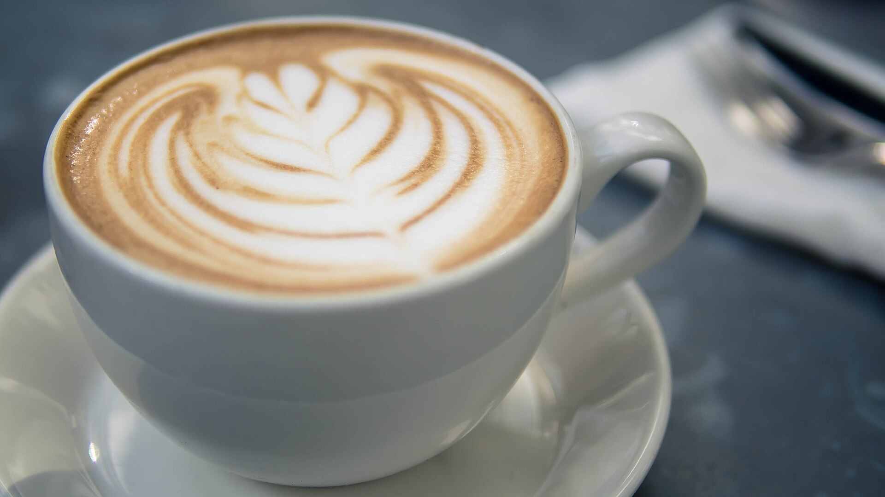
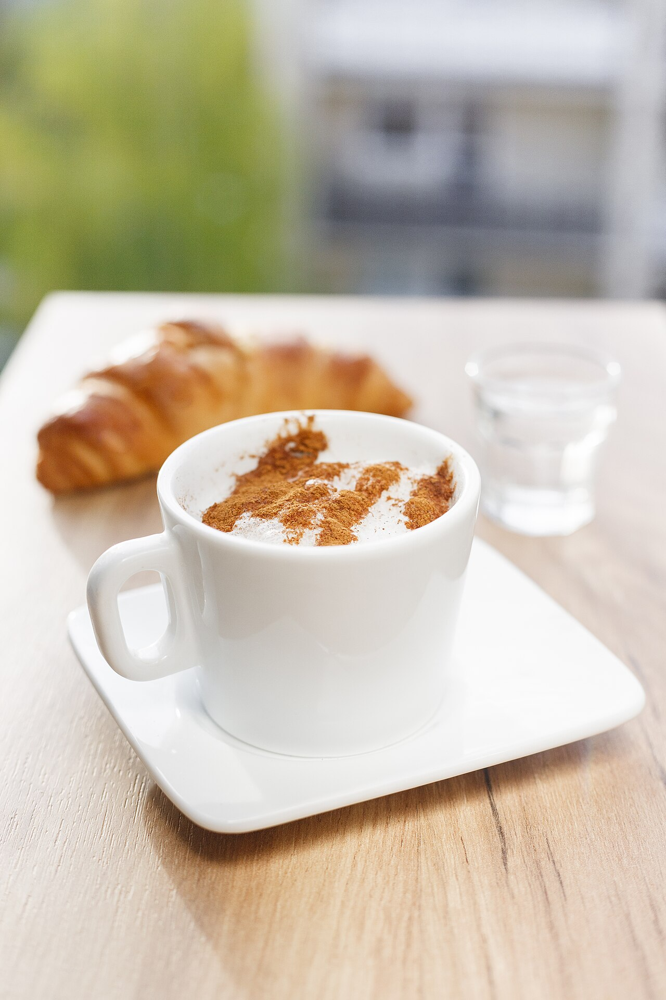

Coffee at the counter
Choose your cup at Birchroom. Filter changes with the morning batch.

Flat white
€3.80
Hand filter
€4.50

Cappuccino
€3.60
Photography · Drew Coffman, Kim Sanso, Katerina Pavlickova